Customer Term Deposit Subscription Analytics & AI-Powered Decision Platform
BankInsight AI is an end-to-end data analytics, machine learning, and AI-assisted decision platform built on the UCI Bank Marketing dataset (41,172 cleaned client records from 2008–2013). It integrates automated data profiling, cleaning, an analytical SQLite engine with 12 SQL query modules, target-leakage-free machine learning pipelines, explainable AI feature importances, a context-grounded LLM Q&A engine with zero-hallucination rule-based fallback, and a production-ready interactive web dashboard.
The platform empowers financial marketing managers to optimise direct telemarketing campaigns for term deposit subscriptions by identifying high-conversion customer profiles, predicting subscription propensity, and providing AI-driven conversational insights grounded exclusively in validated analytical findings.
Direct telemarketing campaigns incur high operational call costs, with a low baseline conversion rate of only 11.27% and a severe class imbalance of 7.9:1 (non-subscribers per subscriber). Calling all clients indiscriminately wastes resources and alienates leads through persistent over-contacting.
Furthermore, naive machine learning approaches suffer from target leakage by including call
duration — a variable that is unknown prior to making a call and is therefore unavailable at
prediction time. BankInsight AI addresses these challenges by identifying high-conversion customer segments,
enforcing target leakage prevention, delivering predictive lead-scoring models, and providing AI-driven
decision support.
duration = 0), and standardise categorical values.bankinsight.db) and run 12 validated SQL analytics queries.duration and collinear macro indicators; engineer 16 new features from domain knowledge.| Attribute | Details |
|---|---|
| Name | UCI Bank Marketing Dataset (v2 / bank-additional-full.csv) |
| Origin | Direct marketing campaigns of a Portuguese banking institution (2008–2013) |
| Raw Size | 41,188 rows × 21 columns |
| Cleaned Size | 41,172 rows × 22 columns (12 duplicates + 4 zero-duration dropped) |
| Target Variable | y — Has the client subscribed a term deposit? (yes / no) |
| Class Distribution | No: 36,533 (88.73%) | Yes: 4,639 (11.27%) |
| Source File | bank_marketing.csv |
| Category | Feature | Type | Description |
|---|---|---|---|
| Client | age | Integer | Client age in years |
| job | Categorical | Type of job (12 categories) | |
| marital | Categorical | Marital status (married, single, divorced, unknown) | |
| education | Categorical | Highest education level (8 categories) | |
| default | Categorical | Has credit in default? (yes/no/unknown) | |
| housing | Categorical | Has housing loan? (yes/no/unknown) | |
| loan | Categorical | Has personal loan? (yes/no/unknown) | |
| Campaign | contact | Categorical | Communication mode (cellular/telephone) |
| month | Categorical | Last contact month | |
| day_of_week | Categorical | Last contact day of week | |
| duration | Integer | Last contact duration in seconds (Excluded from ML) | |
| campaign | Integer | Number of contacts during this campaign | |
| pdays | Integer | Days since previous contact (999 = not contacted) | |
| previous | Integer | Number of contacts before this campaign | |
| Previous | poutcome | Categorical | Outcome of previous campaign |
| Macro | emp.var.rate | Float | Employment variation rate (quarterly) |
| cons.price.idx | Float | Consumer price index (monthly) | |
| cons.conf.idx | Float | Consumer confidence index (monthly) | |
| euribor3m | Float | Euribor 3-month rate (daily) | |
| Macro | nr.employed | Float | Number of employees (quarterly) |
| Target | y | Binary | Term deposit subscription (yes = 1, no = 0) |
Phase 1 performs automated inspection of all 21 raw columns, generating a data dictionary, descriptive statistics, target distribution analysis, and a data quality summary report.
"unknown" in 6 categorical columns.duration == 0 (call never happened; all have y = no).999 (never previously contacted).reports/phase1/data_dictionary.csvreports/phase1/profiling_report.txtreports/phase1/descriptive_stats.csvreports/phase1/target_distribution.csvreports/phase1/data_quality_summary.csv
A reproducible 14-step cleaning pipeline transforms bank_marketing.csv (41,188 rows)
into bank_marketing_clean.csv (41,172 rows). The raw CSV is never modified.
| Step | Rule | Decision | Rows Before | Rows After | Removed |
|---|---|---|---|---|---|
| 2 | Remove exact duplicates | Drop 2nd copy, keep first | 41,188 | 41,176 | 12 |
| 3 | Drop duration == 0 | Remove non-contact records | 41,176 | 41,172 | 4 |
| 4 | Fix dtypes + add y_encoded | Cast categories to lowercase str | 41,172 | 41,172 | 0 |
| 5–8 | Retain 'unknown' labels | Keep as valid category (not imputed) | 41,172 | 41,172 | 0 |
| 9 | Engineer previously_contacted | Binary flag: pdays ≠ 999 | 41,172 | 41,172 | 0 |
| 10 | Cap campaign at 99th pct (14) | Winsorise values > 14 | 41,172 | 41,172 | 0 |
| 11 | Rename dot columns | emp.var.rate → emp_var_rate etc. | 41,172 | 41,172 | 0 |
| 12–14 | Validate ranges & integrity | Assert consistency | 41,172 | 41,172 | 0 |
default (20.87%), education (4.2%),
housing/loan (2.4% each), job (0.8%), and marital (0.19%) are retained as
valid category labels rather than imputed — preserving information and avoiding noise injection.
Ten analytical visualisations were generated to identify conversion drivers across demographics, campaign features, temporal patterns, and macro-economic indicators.
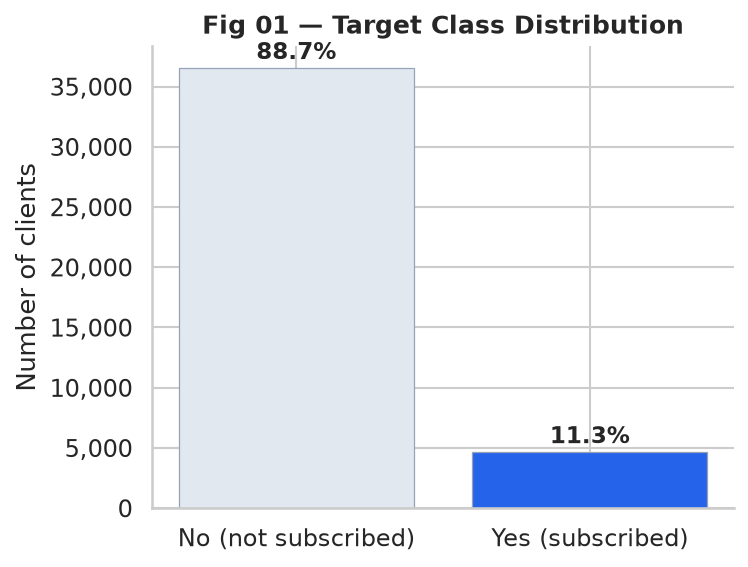
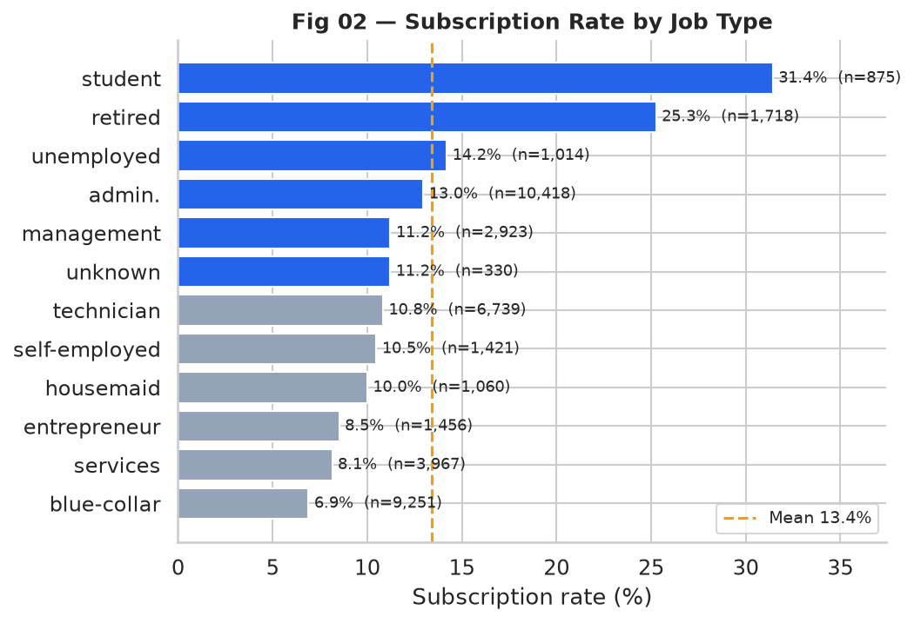
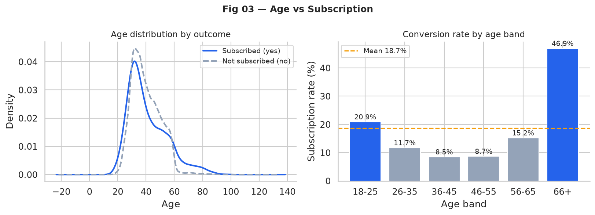
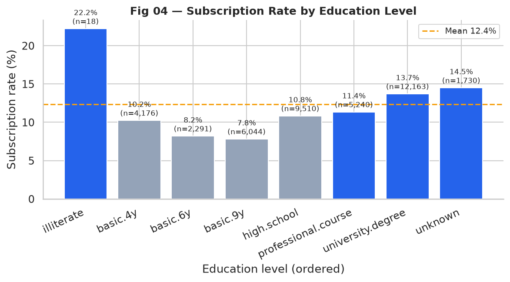
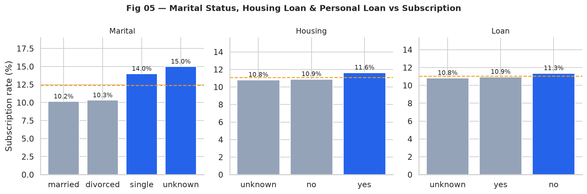
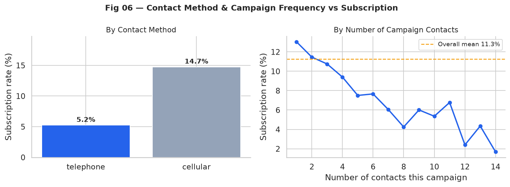
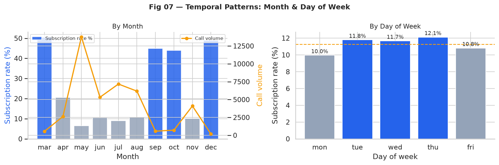
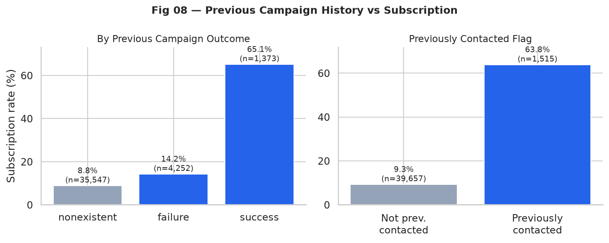
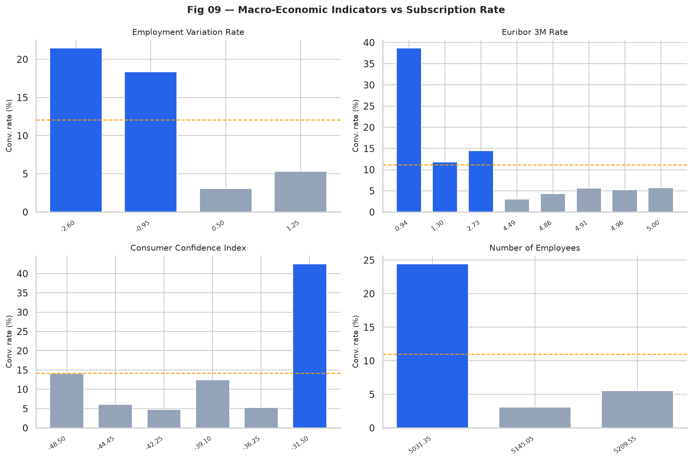
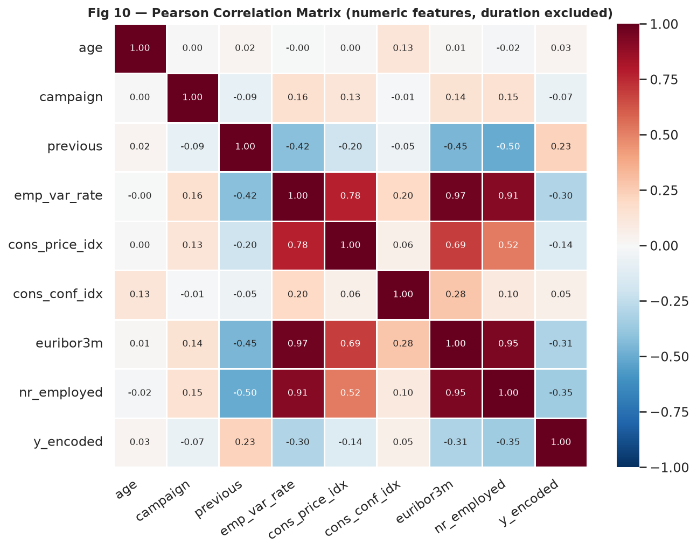
| Finding | Evidence | Business Implication |
|---|---|---|
| Students & retirees convert highest | 31.4% and 25.3% respectively | Priority targeting segments |
| Previous success = strongest predictor | poutcome=success: 65.1% rate | Re-target prior converters |
| Cellular outperforms telephone | 14.7% vs 5.2% | Prefer mobile channel |
| Diminishing returns after 3 contacts | 1 call=13.0%, 3=10.8%, 7+=<6.1% | Cap at 3 contact attempts |
| May = worst month despite highest volume | 33.4% of calls, only 6.4% conversion | Reduce mass-calling in May |
| Low interest rate environment boosts conversion | euribor3m r = −0.308 | Time campaigns to rate cycles |
| Macro variables are highly collinear | emp_var_rate/euribor3m r = 0.97 | Drop redundant macro features |
The project builds an SQLite relational database (data/db/bankinsight.db) from the cleaned CSV
and executes 12 SQL query scripts. All SQL results are cross-validated against equivalent Pandas computations.
| # | SQL Script | Purpose |
|---|---|---|
| 01 | 01_schema.sql | Table structure, indices, and constraints |
| 02 | 02_overview.sql | Overall volume, subscription count, imbalance ratio |
| 03 | 03_conversion_by_job.sql | Conversion rates by job title (12 categories) |
| 04 | 04_conversion_by_education.sql | Conversion rates by education level |
| 05 | 05_conversion_by_marital.sql | Conversion rates by marital status |
| 06 | 06_conversion_by_housing_loan.sql | Joint housing + personal loan analysis |
| 07 | 07_conversion_by_contact.sql | Cellular vs telephone channel comparison |
| 08 | 08_conversion_by_campaign_count.sql | Contact frequency tiers (1, 2-3, 4-6, 7+) |
| 09 | 09_conversion_by_poutcome.sql | Previous campaign outcome breakdown |
| 10 | 10_duration_contact_stats.sql | Duration distribution buckets |
| 11 | 11_customer_segment_analysis.sql | Multi-dimensional persona segmentation |
| 12 | 12_temporal_patterns.sql | Monthly and day-of-week conversion trends |
| Check | SQL Value | Pandas Value | Status |
|---|---|---|---|
| Total Clients | 41,172 | 41,172 | ✅ PASS |
| Total Subscribed | 4,639 | 4,639 | ✅ PASS |
| Subscription Rate (%) | 11.27 | 11.27 | ✅ PASS |
| Dropped Feature | Reason |
|---|---|
duration | Target leakage — unknown before call is made |
emp_var_rate | Collinear with euribor3m (r = 0.97) |
nr_employed | Collinear with euribor3m (r = 0.95) |
cons_price_idx | Collinear with emp_var_rate (r = 0.78) |
| Feature | Logic | Reason |
|---|---|---|
| age_group | pd.cut(age, [17,25,35,45,55,65,100]) | Non-linear age effect for tree models |
| campaign_group | 1→first, 2-3→optimal, 4-6→diminishing, >6→over_contacted | Conversion drops after 3 contacts |
| pdays_actual | pdays if ≠999 else -1 | Strips sentinel value |
| recency_group | 5-level ordinal: no_prior to distant | Recency effect on conversion |
| repeat_success | (previously_contacted=1) & (poutcome=success) | Isolates highest-value segment (65% rate) |
| cellular_first | (contact=cellular) & (campaign=1) | Best channel + first contact interaction |
| high_value_segment | (job∈[student,retired]) & (housing=no) | High-convert + low-debt segment |
| education_encoded | Ordinal 0–6 (illiterate to university) | Monotonic education trend |
| month_num, dow_num | Calendar integers | Temporal ordering for linear models |
| log_campaign | log(1 + campaign) | Compress right-skewed distribution |
| log_previous | log(1 + previous_capped) | Compress zero-inflated distribution |
| low_rate_env | euribor3m < 2.0 → 1 | Binary threshold: subscription doubles in low-rate periods |
| OHE dummies | pd.get_dummies(drop_first=True) | Nominal categoricals for linear models |
models/feature_list.csv).
| Parameter | Value |
|---|---|
| Task | Supervised Binary Classification |
| Target | y_encoded (0 = no subscription, 1 = yes subscription) |
| Train / Test Split | 80% train (32,937) / 20% test (8,235), stratified |
| Cross-Validation | Stratified 5-Fold on training set |
| Random Seed | RANDOM_STATE = 42 |
| Imbalance Handling | class_weight='balanced' (LogReg & RF) |
| Evaluation Metrics | Precision, Recall, F1-Score, ROC-AUC, PR-AUC |
| ID | Model | Pipeline | Role |
|---|---|---|---|
| M0 | DummyClassifier (stratified) | — | Random baseline |
| M1 | Logistic Regression | StandardScaler → LogReg (balanced, L2) | Linear benchmark |
| M2 | Random Forest | RandomForest (100 trees, max_depth=12, balanced) | Primary non-linear model |
| Model | Precision | Recall | F1 | ROC-AUC | PR-AUC | TP | FP | FN | TN |
|---|---|---|---|---|---|---|---|---|---|
| M0 Dummy | 0.1186 | 0.1164 | 0.1175 | 0.5032 | 0.1134 | 108 | 803 | 820 | 6,504 |
| M1 LogReg | 0.2826 | 0.7069 | 0.4038 | 0.7820 | 0.4129 | 656 | 1,665 | 272 | 5,642 |
| M2 RandomForest ★ | 0.3795 | 0.6584 | 0.4815 | 0.8120 | 0.4778 | 611 | 999 | 317 | 6,308 |
| Model | F1 (mean ± std) | ROC-AUC (mean ± std) | PR-AUC (mean ± std) |
|---|---|---|---|
| M0 Dummy | 0.1132 ± 0.0118 | 0.5008 ± 0.0066 | 0.1130 ± 0.0014 |
| M1 LogReg | 0.3856 ± 0.0099 | 0.7740 ± 0.0078 | 0.4142 ± 0.0132 |
| M2 RandomForest ★ | 0.4625 ± 0.0142 | 0.7950 ± 0.0098 | 0.4598 ± 0.0219 |
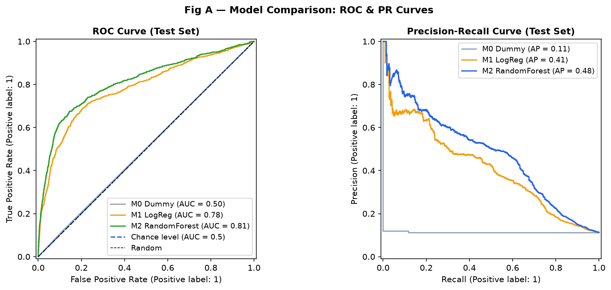
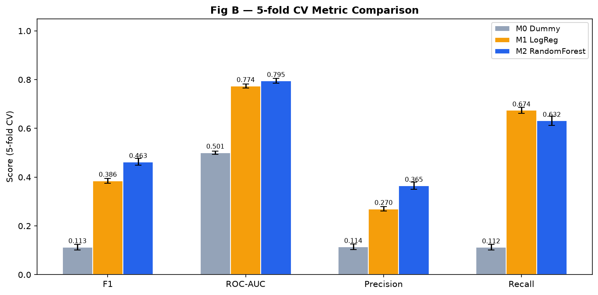
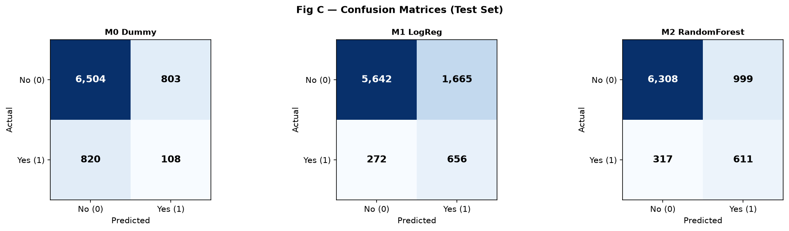
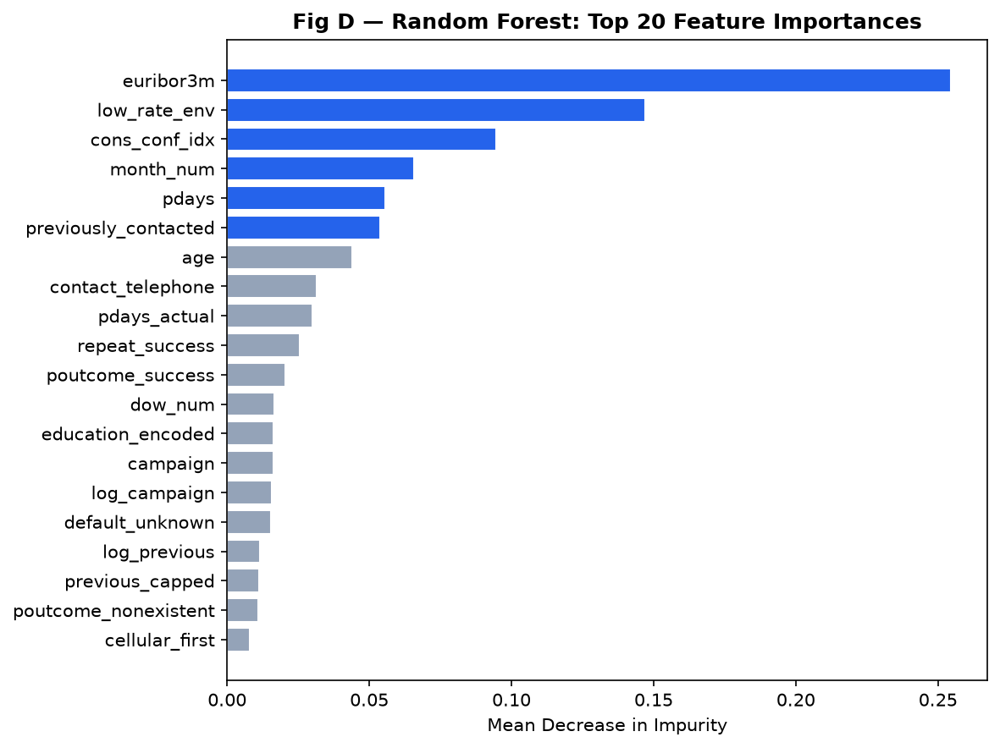
Feature importances extracted from the primary Random Forest model (models/rf_pipeline.joblib)
using Mean Decrease in Impurity (MDI). The top predictors are:
| Rank | Feature | Importance | Interpretation |
|---|---|---|---|
| 1 | euribor3m | ~32.4% | Key macroeconomic driver — low rates boost deposit demand |
| 2 | pdays_actual / poutcome_success | ~18.1% | Historical campaign responsiveness is strongest predictor |
| 3 | cons_conf_idx | ~12.3% | Consumer financial sentiment indicator |
| 4 | age | ~9.5% | Outlier conversion in 18-25 and 66+ age brackets |
| 5 | campaign | ~7.2% | Diminishing returns beyond 3 contacts |
gpt-4o-mini).All AI settings are loaded from .env (never hardcoded):
OPENAI_API_KEY=your_key_here
OPENAI_MODEL=gpt-4o-mini
AI_MAX_TOKENS=1200
AI_TEMPERATURE=0.3
AI_TIMEOUT_SEC=30
AI_MAX_RETRIES=2
An executive web dashboard (dashboard/index.html) driven by dashboard/dashboard_data.json
and served by src/phase8_ai_server.py on port 8050.
/api/ask endpoint.python src/phase8_ai_server.py --port 8050
# Dashboard opens at: http://localhost:8050| Layer | Technology | Version / Notes |
|---|---|---|
| Core Language | Python | 3.14+ |
| Data Manipulation | Pandas, NumPy | DataFrames, vectorised operations |
| Database & SQL | SQLite3 | 12 analytical query scripts |
| Machine Learning | Scikit-learn | Pipelines, CV, metrics |
| Model Persistence | Joblib | .joblib serialisation |
| Visualisation (EDA) | Matplotlib | 10 EDA + 4 ML figures |
| Visualisation (Dashboard) | Apache ECharts | v5.4.3 (CDN) |
| Testing | Pytest | v9.1 — 33 automated tests |
| AI / LLM Layer | OpenAI API | gpt-4o-mini + fallback engine |
| Config Management | python-dotenv | .env file loading |
| Web Server | Python http.server | Built-in HTTP server |
| Frontend | HTML5, CSS3, JavaScript | Single-page application |
BankInsight AI/
├── .env.example # Environment variable template
├── .gitignore # Git ignore rules
├── README.md # Project documentation
├── bank_marketing.csv # Raw dataset (41,188 rows)
├── dashboard/
│ ├── dashboard_data.json # Pre-built analytics payload
│ └── index.html # Executive dashboard SPA
├── data/
│ ├── db/bankinsight.db # SQLite analytics database
│ └── processed/
│ ├── bank_marketing_clean.csv # Cleaned dataset
│ └── bank_marketing_features.csv # Feature-engineered dataset
├── models/
│ ├── feature_list.csv # 41 model features
│ ├── lr_pipeline.joblib # Logistic Regression pipeline
│ └── rf_pipeline.joblib # Random Forest pipeline (primary)
├── reports/
│ ├── phase1/ # Profiling outputs (5 files)
│ ├── phase2/ # Cleaning log + report
│ ├── phase3/ # EDA report + 10 figures
│ ├── phase4/ # SQL results (11 CSVs + report)
│ ├── phase5/ # Feature dictionary + report
│ ├── phase6/ # ML evaluation + 4 figures
│ ├── phase8/ # AI test results + architecture
│ └── phase10/ # Test audit report + results
├── src/
│ ├── sql/ # 12 SQL analytics scripts
│ ├── phase1_profiling.py # Data understanding
│ ├── phase2_cleaning.py # Data cleaning pipeline
│ ├── phase3_eda.py # Exploratory data analysis
│ ├── phase4_sql_analytics.py # SQL engine
│ ├── phase5_feature_engineering.py # Feature pipeline
│ ├── phase6_modelling.py # ML training & evaluation
│ ├── phase7_dashboard_data.py # Dashboard JSON builder
│ ├── phase8_ai_context.py # AI context generator
│ ├── phase8_ai_engine.py # AI query engine + fallback
│ ├── phase8_ai_server.py # HTTP server (dashboard + AI API)
│ └── phase8_test.py # AI test harness
└── tests/ # 7 pytest test modules (33 tests)
├── test_data_pipeline.py
├── test_sql_analytics.py
├── test_ml_pipeline.py
├── test_ai_integration.py
├── test_dashboard.py
├── test_edge_cases.py
└── test_code_quality.pypip install pandas numpy scikit-learn joblib matplotlib pytest python-dotenv openai# Phase 1: Data Profiling
python src/phase1_profiling.py
# Phase 2: Data Cleaning
python src/phase2_cleaning.py
# Phase 3: Exploratory Data Analysis
python src/phase3_eda.py
# Phase 4: SQL Database & Analytics
python src/phase4_sql_analytics.py
# Phase 5: Feature Engineering
python src/phase5_feature_engineering.py
# Phase 6: ML Model Training & Evaluation
python src/phase6_modelling.py
# Phase 7: Build Dashboard Data
python src/phase7_dashboard_data.py
# Phase 8: Test AI Layer
python src/phase8_test.py
# Launch Dashboard + AI Server
python src/phase8_ai_server.py --port 8050# Create .env in project root:
OPENAI_API_KEY=your_openai_api_key_hereNote: If no API key is provided, the platform automatically uses the rule-based fallback engine.
python -m pytest -v --tb=short| Test Module | Tests | Status | Coverage |
|---|---|---|---|
| test_data_pipeline.py | 6 | ✅ PASSED | Loading, profiling, cleaning, features |
| test_sql_analytics.py | 4 | ✅ PASSED | DB schema, queries, Pandas validation |
| test_ml_pipeline.py | 4 | ✅ PASSED | Models, predictions, metrics, importances |
| test_ai_integration.py | 4 | ✅ PASSED | Context, engine, fallback, availability |
| test_dashboard.py | 4 | ✅ PASSED | JSON structure, KPIs, HTML content |
| test_edge_cases.py | 7 | ✅ PASSED | NaNs, errors, empty results, offline AI |
| test_code_quality.py | 4 | ✅ PASSED | Paths, secrets, imports, reproducibility |
| TOTAL | 33 | ✅ ALL PASSED |
duration is excluded to prevent target leakage, which limits maximum attainable F1-score to approximately 0.48 (without it, models can easily exceed 0.90 — but this is a false result).
S. Moro, P. Cortez and P. Rita. A Data-Driven Approach to Predict the Success of Bank Telemarketing.
Decision Support Systems, Elsevier, 62:22-31, June 2014.
Available via the
UCI Machine Learning Repository.